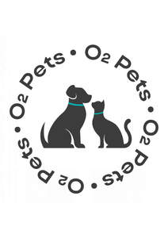

Trade Mark Journal No.2025/018 2 May 2025
UK00004191355 18 April 2025 (5,21,31,41)

- Class 5
- Animal washes [insecticides]; bacterial preparations for medical and veterinary use; bacteriological preparations for medical and veterinary use; biological preparations for veterinary purposes; biological tissue cultures for veterinary purposes; bouillons for bacteriological cultures for medical purposes or veterinary purposes / bacteriological culture mediums for medical purposes or veterinary purposes / media for bacteriological cultures for medical purposes or veterinary purposes; cement for animal hooves; chemical preparations for veterinary purposes; chemical reagents for medical or veterinary purposes; cultures of microorganisms for medical or veterinary use; deodorants, other than for human beings or for animals; diagnostic preparations for veterinary purposes; diapers for pets; dietary supplements for animals; disposable absorbent pads for lining pet crates / disposable absorbent mats for lining pet crates; disposable house training pads for pets / disposable housebreaking pads for pets; dog washes [insecticides]; enzyme preparations for veterinary purposes; enzymes for veterinary purposes; greases for veterinary purposes; insecticidal animal shampoos; insecticidal veterinary washes; lotions for veterinary purposes; medicated animal feed; medicated shampoos for pets; medicines for veterinary purposes; preparations of microorganisms for medical or veterinary use; preparations of trace elements for human and animal use; protein supplements for animals; reagent paper for veterinary purposes; repellents for dogs; stem cells for veterinary purposes; veterinary preparations.
- Class 21
- Feeding troughs for livestock; Feeding troughs; Feeding troughs for cattle; Feeding troughs for pigs; Feeding troughs of metal for cattle; Feeding cups; Pet feeding bowls; Pet feeding bowls, automatic; Bird feeders for feeding caged birds; Animal activated livestock feeders; Pet feeding dishes; Feeding bottle brushes; Bird feeding tables; Bird feeders for feeding birds in the wild; Brushes for feeding bottle teats; Feeding vessels for pets; Bait stations, empty, for feeding rodenticides to rodents; Brushes for feeding bottles; Feeding cups for children; Pet feeding and drinking bowls; Cleaning brushes for feeding bottle teats; Automatic pet feeders; Small animal feeders; Animal activated animal feeders; Animal activated livestock waterers; Brushes for cleaning babies' feeding bottles.
- Class 31
- Algae, unprocessed, for human or animal consumption / seaweed, unprocessed, for human or animal consumption; algarovilla for animal consumption; animal fattening preparations / livestock fattening preparations; animal foodstuffs; beverages for pets; bird food; bran mash for animal consumption; by-products of the processing of cereals, for animal consumption / residual products of cereals for animal consumption; cuttle bone for birds; distillery waste for animal consumption; dog biscuits; edible chews for animals; grains for animal consumption; lime for animal forage; linseed for animal consumption / flaxseed for animal consumption; linseed meal for animal consumption / flaxseed meal for animal consumption; litter for animals; live animals; meal for animals; menagerie animals; peanut cake for animals; peanut meal for animals; pet food; roots for animal consumption; sand for pet toilets; sanded paper [litter] for pets; stall food for animals; wheat germ for animal consumption; wood shavings for animal bedding; yeast for animal consumption; Dog treats [edible]; Edible dog treats; Cat treats [edible]; Edible pet treats; Dog biscuits; Biscuits (Dog -); Pet treats in the nature of bully sticks; Dog foods; Pet food for dogs; Dog food; Edible horse treats; Dogs; Biscuits for dogs; Edible chews for dogs; Food for dogs; Edible treats for animals; Edible bird treats; Cat biscuits; Foodstuff for dogs; Litter for dogs; Beverages for dogs; Pet foods in the form of chews; Foodstuffs for dogs; Bones for dogs; Pet animals; Cat food; Cattle feed; Animal feed; Animal feeds; Fish meal [animal feed]; Animal feed preparations; Synthetic animal feed; Rice bran [animal feed].
- Class 41
- Animal training; arranging of beauty contests for animals; organization of animal racing events; zoological garden services.
O2 PETS TRADING L.L.C
Representative: Boris Gerasin